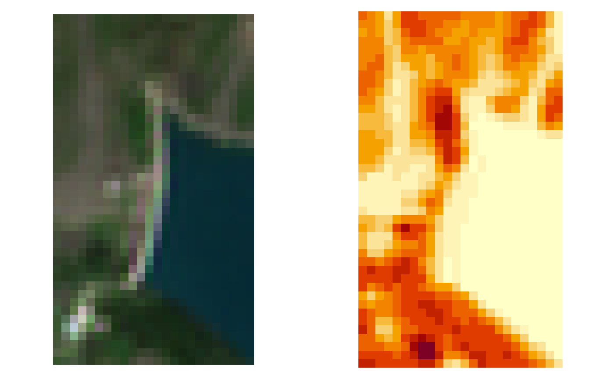

Create maps of a set of spectral indices. Since
gdal_calc.py is used to perform computations, output files
are physical rasters (no output VRT is allowed).
s2_calcindices(
infiles,
indices,
outdir = ".",
parameters = NULL,
source = c("TOA", "BOA"),
format = NA,
subdirs = NA,
tmpdir = NA,
compress = "DEFLATE",
bigtiff = FALSE,
dataType = "Int16",
scaleFactor = NA,
proc_mode = "raster",
parallel = FALSE,
overwrite = FALSE,
.log_message = NA,
.log_output = NA
)A vector of input filenames. Input files are paths of BOA (or TOA) products already converted from SAFE format to a format managed by GDAL (use s2_translate to do it); their names must be in the sen2r naming convention (safe_shortname).
Character vector with the names of the required indices. Values should be included in names corresponding to the Abbreviations of the following indices: IDB.
(optional) Full name of the output directory where
the files should be created (default: current directory).
outdir can bot be an existing or non-existing directory (in the
second case, its parent directory must exists).
If it is a relative path, it is expanded from the common parent
directory of infiles.
(optional) Values of index parameters. This variable
must be a named list, in which each element is a list of parameters,
i.e.:
parameters = list("SAVI" = list("a" = 0.5))
Values can be both numeric values or band names (e.g. "band_1").
If not specified, parameters are set to default values.
(optional) Vector with the products from which computing
the indices. It can be "BOA", "TOA" or both (default). If both values
are provided, indices are computed from the available products ("TOA"
if TOA is available, BOA if BOA is available); in the case both are
available, two files are produced (they can be distinguished from the
level component - S2x1C or S2x2A - in the filename).
(optional) Format of the output file (in a format recognised by GDAL). Default is the same format of input images (or "GTiff" in case of VRT input images).
(optional) Logical: if TRUE, different indices are
placed in separated outfile subdirectories; if FALSE, they are placed in
outfile directory; if NA (default), subdirectories are created only if
more than a single spectral index is required.
(optional) Path where intermediate files (GTiff) will be
created in case format is "VRT".
(optional) In the case a GTiff format is present, the compression indicated with this parameter is used.
(optional) Logical: if TRUE, the creation of a BigTIFF is forced (default is FALSE). This option is used only in the case a GTiff format was chosen.
(optional) Numeric datatype of the output rasters.
if "Float32" or "Float64" is chosen, numeric values are not rescaled;
if "Int16" (default) or "UInt16", values are multiplicated by scaleFactor argument;
if "Byte", values are shifted by 100, multiplicated by 100 and truncated
at 200 (so that range -1 to 1 is coerced to 0-200), and nodata value
is assigned to 255.
(optional) Scale factor for output values when an integer
datatype is chosen (default values are 10000 for "Int16" and "UInt16",
1E9 for "Int32" and "UInt32"). Notice that, using "UInt16" and
"UInt32" types, negative values will be truncated to 0.
(optional) Character: if "gdal_calc",
gdal_calc routines are used to compute indices;
if "raster" (default) or "stars", R functions are instead used
(using respectively raster or stars routines).
Notes:
default value ("raster") is the only fully supported mode.
"gdal_calc" can be used only if a runtime GDAL environment can be properly
configured (no assistance is provided in case of GDAL-related problems).
"raster" mode is experimental.
There is a difference in which the two modes manage values out
of ranges (e.g. -32768 to 32767 in Int16 and 0 to 255 in Byte):
"raster" and "stars" modes set these values to NA,
"gdal_calc" mode clip them to the minimum/maximum values;
(optional) Logical: if TRUE, the function is run using parallel
processing, to speed-up the computation for large rasters.
The number of cores is automatically determined; specifying it is also
possible (e.g. parallel = 4).
If FALSE (default), single core processing is used.
Multiprocess masking computation is always performed in singlecore mode
Logical value: should existing output files be overwritten? (default: FALSE)
(optional) Internal parameter
(it is used when the function is called by sen2r()).
(optional) Internal parameter
(it is used when the function is called by sen2r()).
A vector with the names of the created products.
License: GPL 3.0
L. Ranghetti, M. Boschetti, F. Nutini, L. Busetto (2020). "sen2r": An R toolbox for automatically downloading and preprocessing Sentinel-2 satellite data. Computers & Geosciences, 139, 104473. doi:10.1016/j.cageo.2020.104473 , URL: https://sen2r.ranghetti.info/.
# Define file names
ex_in <- system.file(
"extdata/out/S2A2A_20190723_022_Barbellino_BOA_10.tif",
package = "sen2r"
)
# Run function
ex_out <- s2_calcindices(
infiles = ex_in,
indices = "EVI",
outdir = tempdir(),
dataType = "Float32"
)
#> Loading required package: sp
#> Loading required package: abind
#> Loading required package: sf
#> Linking to GEOS 3.11.2, GDAL 3.6.2, PROJ 9.2.0; sf_use_s2() is TRUE
#> [2023-10-19 16:28:01] Computing index EVI on date 2019-07-23...
ex_out
#> [1] "C:\\Users\\luigi.ranghetti\\AppData\\Local\\Temp\\RtmpkXRmAu/S2A2A_20190723_022_Barbellino_EVI_10.tif"
# Show output
oldpar <- par(mfrow = c(1,2), mar = rep(0,4))
image(stars::read_stars(ex_in), rgb = 4:2, maxColorValue = 3500, useRaster = TRUE)
par(mar = rep(2/3,4))
image(stars::read_stars(ex_out), useRaster = TRUE)

par(oldpar)